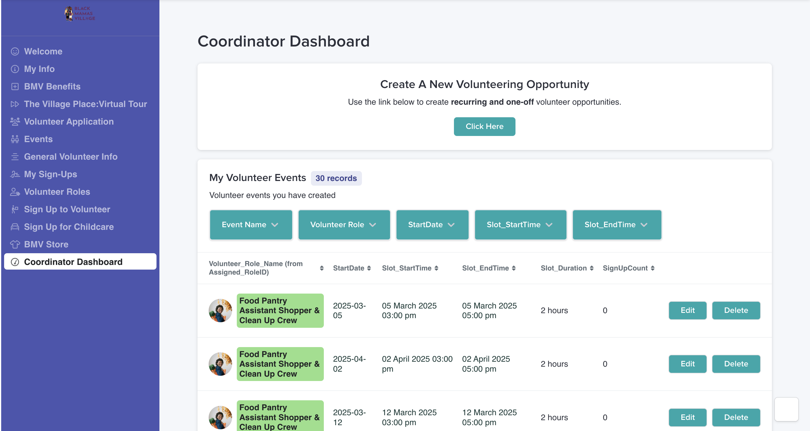

Black Mama's Village
Empowering Volunteer Coordination and Enhancing Actionable Data Capture
role:
strategist
category:
design thinking, human-centered design
the problem
Black Mama’s Village is a nonprofit based in Austin, TX, dedicated to supporting Black mothers through community-based programs. Their CRM built on Airtable and Stacker was functional but fragmented.
Volunteer workflows were inconsistent, data capture lacked structure, and coordinators struggled to manage events effectively. The executive team needed a system that could scale operations, improve visibility, and empower more community members to take on leadership roles.
the process
Partnering directly with a member of the executive team, I scoped the project by identifying key pain points across three primary personas: volunteers, volunteer coordinators, and admins.
My process included:
1
Journey Mapping
Auditing existing user flows and created a journey map to surface friction points across 3 personas -- Volunteer, Volunteer Coordinator, Admin.
2
Persona-Driven Prioritization
Focusing first on the highest-impact workflows — volunteer discovery and coordinator oversight — while building in admin-level data visibility as a north star.
3
Workflow Redesign
Streamlined the end-to-end process of event discovery, sign-up, and management.
The Solution
I designed and implemented a set of system-wide enhancements focusing on two things:
Focus #1
Rethinking workflows for volunteers and coordinators
With admins’ key pain point of significant manual overhead in mind, I designed interactions in the coordinator and volunteer user journeys to give power to the user and reduce the number of responsibilities for the admin.
New Coordinator Dashboard page
Allowing coordinators to edit, cancel, and view all events they are coordinating

Adding additional touchpoints to create volunteer opportunitites
Creating 2 buttons on homepage and Coordinator dashboard to create opportunities without reaching out to admins
Configuring pre-filled "Cancel sign up" emails
Expanding volunteers' access to BMV's admins and easier cancellations with prefilled email addressee, title, and body text
Focus #2
Eliminating volunteer guesswork by reframing critical information
Understanding that volunteers need quicker access to viewing opportunity information, I updated the layout to enable visibility into more opportunities in one view, and updated field names and values to be more volunteer-friendly.
For instance, reframing # of volunteers needed to be a new single field called "Volunteers Needed", instead of showing the full capacity of events and the # of sign ups in two separate fields.
Before the redesign:
Card-based layout, complex fields requiring extra mental calculations
After the redesign:
Table layout, intuitive field labels and streamlined opportunity information with no guesswork required
The Impact
These changes enabled the org to capture cleaner, more actionable data, boosted internal clarity, and reduced coordinator overhead. The executive team reported improved transparency and usability across the CRM.